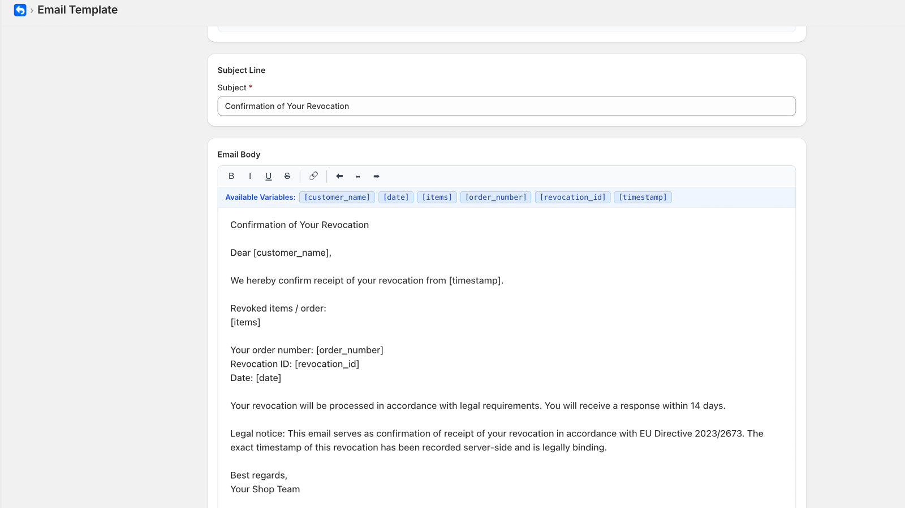
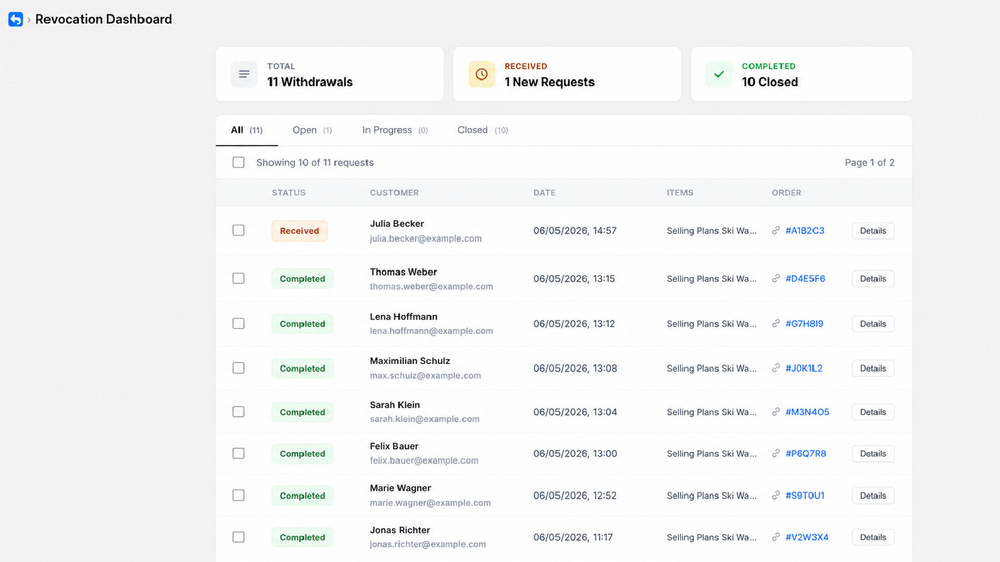
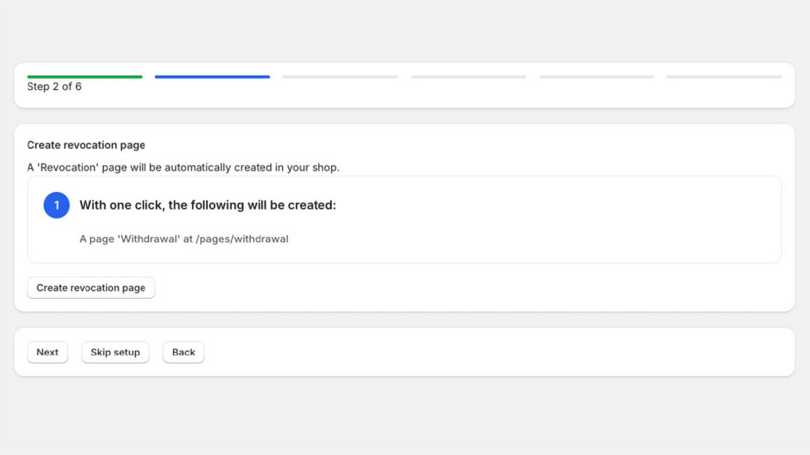

Ab dem 19. Juni 2026 müssen viele B2C-Onlineshops in der EU eine elektronische Widerrufsfunktion anbieten. Für Shopify-Händler stellt sich damit eine sehr praktische Frage: Wie setze ich den EU-Widerrufsbutton konkret in meinem Shop um, ohne dafür ein ganzes Wochenende mit Shopify Forms, Flow und E-Mail-Vorlagen zu verbringen?
Genau für dieses Problem habe ich EasyWiderruf entwickelt. Eine Shopify-App, die den EU-Widerrufsbutton vom Formular bis zur Bestätigungsmail und zum Dashboard in einem Stück abbildet. Einrichtung in zwei Minuten, ohne Code, kostenlos starten. Mehr Hintergrund zum Thema findest du im Ratgeber zum EU-Widerrufsrecht für Shopify.
Warum ich eine eigene App gebaut habe
EasyWiderruf ist aus der Arbeit mit eigenen Shopify-Kunden entstanden. Als Shopify Freelancer habe ich den Widerrufsbutton mehrfach manuell mit Shopify Forms und Flow umgesetzt. Das funktioniert, hat aber drei wiederkehrende Probleme: jede Anpassung an den Texten muss an mehreren Stellen gepflegt werden, die Mehrsprachigkeit ist mühsam, und die Widerrufe landen verteilt zwischen Formularantworten, E-Mails und Flow-Aktionen.
Mit EasyWiderruf ist all das an einer Stelle: das Formular auf der Storefront, die Bestätigungsmail mit Zeitstempel, das Dashboard mit Status-Tracking und die Einstellungen. Eingerichtet ist die App in zwei Minuten, ohne Code, mit einem geführten Onboarding.

Was EasyWiderruf für deinen Shop kann
Die App deckt alles ab, was du für den EU-Widerrufsbutton brauchst. Hier ein Überblick der wichtigsten Funktionen:
Widerrufsbutton und Formular
Einbettbares Formular direkt auf deiner Shopify-Seite. Kunden geben Name, E-Mail und Bestellnummer ein und schicken den Widerruf ab.
Automatische E-Mails
Sofortige Bestätigungsmail mit Zeitstempel. Anpassbare Templates pro Sprache. Optional mit eigener Absender-Domain.
24 EU-Sprachen
Formular und Mails in allen EU-Amtssprachen, von Deutsch und Englisch bis Schwedisch und Polnisch. Automatisch passend zur Shop-Sprache.
Dashboard im Admin
Alle Widerrufe im Blick. Status-Tracking, Bestellnummer, Zeitstempel, Gründe. Filter nach Status, Export bei Bedarf.
DSGVO-konform
Hosting in Frankfurt am Main. Automatische Löschung konfigurierbar. Es werden nur die nötigsten Daten erhoben.
Shopify Returns
Im Pro-Plan werden Widerrufe automatisch als Shopify Returns angelegt. Spart manuelle Arbeit und bleibt im Shopify-Ökosystem.
In zwei Minuten startklar
Das Setup folgt einem klaren Drei-Schritte-Onboarding. Installieren, ein paar Einstellungen prüfen, fertig.
Schritt 1: App installieren. Ein Klick im Shopify App Store. Die App fügt sich nahtlos in deinen Admin-Bereich ein. Du brauchst keine Custom App, keinen Developer-Account und keine Berechtigungen außerhalb des Standards.
Schritt 2: Onboarding starten. Du wählst die Sprache, prüfst die E-Mail-Einstellungen und entscheidest, ob du eine eigene Absender-Domain nutzen möchtest. Das Widerrufsformular wird automatisch als Seite in deinem Shop erstellt. Du musst weder den Theme-Editor öffnen noch eine eigene Seite anlegen.
Schritt 3: Widerrufe empfangen. Kunden können sofort widerrufen. Du siehst alles im Dashboard im Shopify-Admin und die Bestätigungsmail geht automatisch an den Kunden raus, inklusive Zeitstempel.

24 EU-Sprachen automatisch
EasyWiderruf liefert Formular und Bestätigungsmail in allen 24 EU-Amtssprachen aus. Im Free-Plan kannst du zwischen Deutsch und Englisch wählen, im Pro-Plan sind alle 24 Sprachen aktiv und passen sich automatisch an die Sprache des jeweiligen Kunden an.
Das ist besonders relevant, wenn dein Shop in mehrere EU-Länder verkauft oder eine internationale Storefront hat. Ein Kunde aus Italien bekommt das Formular auf Italienisch, die Bestätigungsmail ebenfalls. Du musst nichts manuell duplizieren oder per Plug-in pflegen.
DSGVO und Datenschutz
Beim Widerruf werden personenbezogene Daten verarbeitet, deshalb gelten die DSGVO-Anforderungen. Konkret: Name, E-Mail-Adresse, Bestellnummer, optional Widerrufsgrund und Zeitstempel.
EasyWiderruf ist darauf ausgelegt: Alle Daten werden in Frankfurt am Main gehostet. Eine automatische Löschung nach einem konfigurierbaren Zeitraum ist eingebaut, damit du das Thema nicht manuell überwachen musst. Erhoben werden nur die Felder, die für die Dokumentation des Widerrufs nötig sind. Eine klare Datenschutzerklärung und ein DPA stehen zur Verfügung.
Das macht EasyWiderruf besonders für deutsche und österreichische Shops interessant, die bei Drittanbieter-Apps oft an die Frage stoßen, wo Kundendaten landen.
Verbindung zu Shopify Returns
Im Pro-Plan werden eingehende Widerrufe automatisch als Shopify Returns angelegt. Damit landet die Information direkt dort, wo dein Support-Team ohnehin arbeitet, statt in einer separaten App-Liste. Bestellnummer, Artikelauswahl und Status werden übernommen.
Das spart manuelles Übertragen und vermeidet, dass ein Widerruf zwar im Formular ankommt, aber im operativen Prozess verloren geht. Für Shops, die Retourenmanagement schon mit Shopify Returns oder einer externen Return-App machen, ist das ein wichtiger Anschluss.

Preise: Free dauerhaft, Pro für mehr Funktionen
EasyWiderruf hat zwei Pläne. Der Free-Plan deckt die gesetzlichen Grundlagen ab. Pro ist für Shops gedacht, die mehrere Sprachen, eigene Domain und Shopify-Returns-Integration brauchen.
Free
- EU-Widerrufsbutton und Formular
- Automatische Bestätigungsmails
- Eine Sprache (Deutsch oder Englisch)
- Dashboard mit Status-Tracking
- Bestellnummer-Prüfung
- DSGVO-konform
Pro
- Alle 24 EU-Sprachen
- Custom E-Mail-Templates
- Eigene Absender-Domain
- Automatische Shopify Returns
- Fristüberwachung
- Kein Branding im Formular
- Custom Formular-Design
Für wen EasyWiderruf besonders geeignet ist
EasyWiderruf passt für Shopify-Shops, die den EU-Widerrufsbutton nicht selbst aus Shopify Forms, Flow und E-Mail-Vorlagen zusammenbauen wollen. Typische Konstellationen:
Shops, die in mehrere EU-Länder verkaufen und automatische Sprachunterstützung brauchen. Händler, denen DSGVO und EU-Hosting wichtig sind. Teams, die Widerrufe zentral im Shopify-Admin statt verteilt in mehreren Tools bearbeiten wollen. Shops mit Shopify Returns als bestehendem Workflow. Und alle Händler, die wenig Setup-Aufwand wollen und gleichzeitig sichergehen möchten, dass Bestätigungsmail mit Zeitstempel zuverlässig rausgeht.
Wenn du den Widerruf hingegen lieber manuell mit Shopify Forms und Flow aufsetzt, findest du in meinem Schritt-für-Schritt-Guide zum Widerrufsbutton in Shopify die kostenlose Variante.
Fazit
Der EU-Widerrufsbutton ist ab Juni 2026 Pflicht für viele B2C-Shopify-Shops. EasyWiderruf ist die App, die ich aus der Arbeit mit eigenen Kunden gebaut habe, weil mir die manuellen Setups zu fehleranfällig waren. Zwei Minuten Onboarding, kein Code, DSGVO-konformes Hosting in Frankfurt, 24 EU-Sprachen, automatische Bestätigungsmail mit Zeitstempel und auf Wunsch Shopify Returns.
Wer den Stichtag ohne Stress erreichen will, fängt mit dem Free-Plan an. Wer Mehrsprachigkeit oder eigene Domain braucht, testet Pro 14 Tage kostenlos. Mehr Infos zur App findest du auf widerruf.app.
EasyWiderruf für deinen Shopify-Shop installieren
Free-Plan dauerhaft kostenlos, Pro 14 Tage kostenlos testen. Setup in zwei Minuten, ohne Code. DSGVO-konformes Hosting in Frankfurt, 24 EU-Sprachen, automatische Bestätigungsmail mit Zeitstempel.
EasyWiderruf im Shopify App Store öffnen